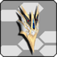

| Recommended Units | ||
|---|---|---|
 Rear/Back Rear/Back |
 Arm Arm |
 Leg Leg |

 Cras Dyne Klauzdyne (120 ATK, 15 PP, 70 HP) Supports S6 |

Liberate One Rivalate One (75 ATK, 15 PP, 60 HP) Supports S7 |

Cras Ment Klauzment (80 ATK, 30 PP, 40 HP) Supports S8 |
| Other Options | ||
| Rear/Back |
Arm |
Leg |

Avion Orb/Dusk (60 ATK, 23 PP, 20 HP) Supports S6 |

Lightstream Vixion Trailblazer Mount Bixion (65 ATK, 16 PP, 100 HP) Supports S7 |

Nova/Mirage Cell Nova Selque/Mirage Cell (50 ATK, 22 PP, 50 HP) Supports S8 |

Liberate Full Rivalate Ful (75 ATK, 15 PP, 60 HP) Supports S6 |

Cras Noom Klauznum (60 ATK, 15 PP, 220 HP) Supports S7 |

Liberate Mass Rivalate Mas (75 ATK, 15 PP, 60 HP) Supports S8 |

Lightstream Paxion Trailblazer Drape Paxion (65 ATK, 16 PP, 100 HP) Supports S6 |

Atlas Shatan Atlas Chatten (90 ATK, 11 PP, 100 HP) Supports S7 |

Lightstream Raxion Trailblazer Decor Raxion (65 ATK, 16 PP, 100 HP) Supports S8 |
Units feature SSA slots! Rears feature an S6 SSA slot,
Arm units feature an S7 SSA slot,
and Leg units feature an S8 SSA slot.